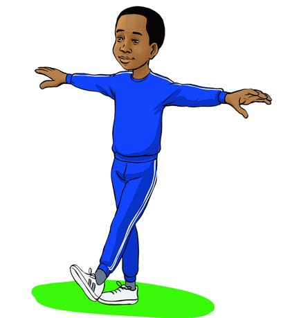

3. Endelea kwa kubadilisha mguu wa kushoto mbele ya kidole cha mguu wa kulia.

Kielelezo Na 4: Mwanafunzi akianza kutembea kwa mguu wa kushoto4. Rudia huku ukisonga mbele.
Kazi ya kufanya namba 1
Fanya zoezi la kisigino kidoleni mpaka uweze kutembea hivyo kwa kasi.
Zoezi la 1
1. Je, zoezi hili linaendana na zoezi gani ulilowahi kufanya?
2. Je, nini umuhimu wa zoezi hili kwako?
3. Je, zoezi hili litakusaidia kucheza michezo gani?